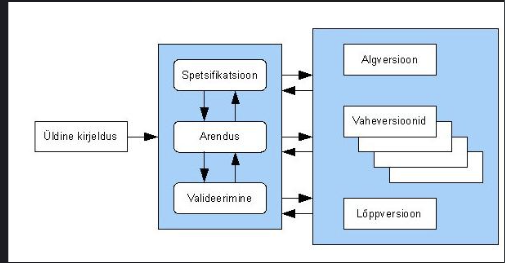

Inkrementaalne
Kirjeldus
Inkrementaalne arendus on etapiviisiline ja ajagraafikut järgiv strateegia, kus süsteemi erinevaid osi arendatakse erinevatel aegadel ja erineva kiirusega ning kui üks osa valmis saab, integreeritakse see juba valmis süsteemiga.
Alternatiivne strateegia oleks kodeerida kõik süsteemi osad ja siis kogu kood integreerida ühekorraga.
Etappide täpsem kirjeldus
Tegevuste käik on järgmine: kõigepealt määratakse nõuded üldisemal kujul ning nad jaotatakse tähtsamateks ja vähemtähtsateks.
Järgnevalt määratakse tarneosad - mitme tarnena ja millest koosnevana klient oma tarkvara saama hakkab. Tarne all mõeldakse süsteemi osa ehk inkrementi.
Iga tarne peab lisama süsteemile kindla funktsionaalsuse. Sealjuures tootmist alustatakse kõrgema prioriteediga osadest. Kui süsteemi osad on määratud, võetakse ette 1. osa ja hakatakse seda detailiseerima, kasutades selleks sobivaimat protsessi.
Samaaegselt saab täpsustada teiste osade nõudeid, kuid töös oleva osa nõuded on külmutatud.
Kui väga vaja, pöördutakse selle osa juurde tagasi hiljem. Kui osa saab valmis, tarnitakse see kliendile, kes saab selle töösse rakendada (või vähemalt seda tõsiselt katsetada). See aitab kliendil täpsustada nõudeid järgmiste osade jaoks.
Seejärel võetakse käsile järgmine osa. Uued osad liidestatakse olemasoleva süsteemiga.
Mis on hea?
Kulutused, mida tehakse kasutaja nõuete muutumise tõttu, vähenevad, uuesti tehtava analüüsi ja dokumentatsiooni hulk väheneb oluliselt võrreldes koskmudeliga.
Kergem on saada kliendi tagasisidet juba tehtud arendustööle - kliendid saavad anda kommentaare valminud osadele ja ka näevad, kui palju on tehtud. Sel viisil on esimesed süsteemi osad nagu prototüübid kogu süsteemile.
Kliendile on võimalik kiiremini tarnida ja evitada loodavat tarkvara - kliendid võivad saada süsteemist reaalset kasu varem, kui see oleks võimalik koskmudeliga.
Mis on halb?
Progress ei ole hästi jälgitav - haldurid vajavad pidevalt materjale progressi mõõtmiseks. Kiire arenduse korral ei ole tasuv tekitada dokumente iga pisikese versioonimuudatuse jaoks.
Süsteemi struktuur kipub halvenema uute osade lisandumisel - pidev muutmine rikub süsteemi struktuuri. Selle vältimiseks ja tarkvara kvaliteedi parandamiseks on vaja kulutada lisaks aega ja raha refaktoreerimisele. Halb struktuur muudab tarkvara hilisema muutmise keerulisemaks ja kulukamaks.
Visuaalne joonis

|